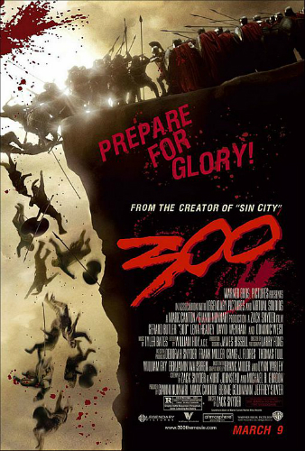
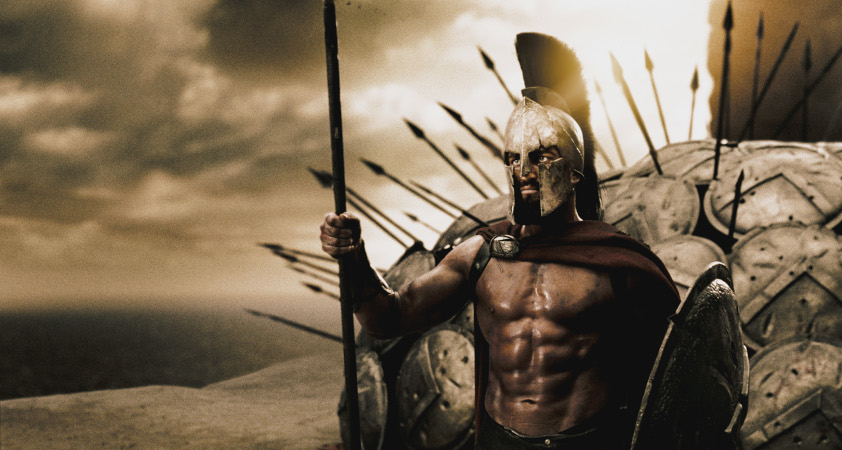
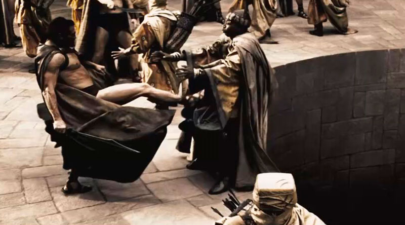
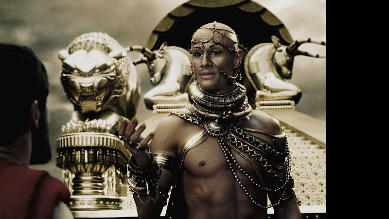

300 O FILME
300 é um filme de fantasia e guerra norte-americano de 2006, co-escrito e dirigido por Zack Snyder. É baseado na série de quadrinhos homônima de Frank Miller e Lynn Varley, publicada pela Dark Horse Comics em 1998. Ambos são releituras fictícias da Batalha de Termópilas durante as Guerras Persas. Miller serviu como produtor executivo e consultor do filme. Grande parte de 300 foi filmada com uma técnica de chroma key em superposição, para ajudar a replicar as imagens da história em quadrinhos original.
Sinopse
O filme começa com um orador espartano a contar a vida do jovem rei Leónidas I, revelando também o rigor e a disciplina a que foi submetido durante a sua infância. Aos sete anos, é tirado da sua mãe para iniciar o agogê - um período de privações a que todos os cidadãos de Esparta são submetidos.Passados trinta anos, o orador conta que um mensageiro persa chega a Esparta e comunica-lhe o desejo de Xerxes I em dominar a região - através de um pedido aparentemente inocente de "terra e água". Leónidas, ofendido com tal mensagem, mata toda a comitiva persa e decide começar uma guerra com Xerxes. Como Esparta estava a celebrar a festa religiosa da Carneia, Leónidas não poderia entrar em guerra, então ele pega 300 homens de sua guarda pessoal e diz que vai dar um passeio - e marcha ao encontro dos invasores persas.
O enredo gira em torno do Rei Leónidas (Gerard Butler), que lidera 300 espartanos na batalha contra o "deus-rei" Xerxes I (Rodrigo Santoro) da Pérsia e o seu exército invasor com mais de 30 mil soldados. Enquanto a batalha acontece, a Rainha Gorgo (Lena Headey) tenta encontrar apoio para o seu marido em Esparta. A história é contada por um narrador, o guerreiro espartano Dilios. Os eventos são revelados como uma história contada por Dilos, o único dos 300 espartanos a sobreviver à batalha.
Cenas do filme



Recepção
Comercial
300 foi lançado na América do Norte em 9 de março de 2007, nos cinemas convencionais e IMAX.O filme arrecadou US$ 28.106.731 no dia de abertura e terminou seu fim de semana de abertura na América do Norte com US$ 70.885.301 acumulados. O filme terminou seu circuito mundial nos cinemas com US$ 456.068.181 de bilheteria internacional.
Crítica
No Rotten Tomatoes, o filme tem uma taxa de aprovação de 60% com base em 232 avaliações, com uma classificação média de 6,08/10; o consenso crítico do site diz: "Uma experiência simplória, mas visualmente emocionante, cheia de sangue, violência e citações de filmes prontas". No Metacritic o filme tem uma pontuação média de 52 em 100, com base em 42 críticas, indicando "críticas mistas ou médias". O público entrevistado pela CinemaScore deu ao filme uma nota média de "A–" em uma escala de A+ a F.